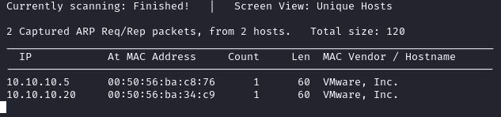

Scanning and Enumeration
Ports, Protocols, and Services (PPS) help us in identifying the
types of applications running on a system and subsequently any potential weaknesses
In this phase we will use
most of the time
nmap(Network mapper) that is also available with a GUI called
Zenmap
These are step to follow during the Scanning Phase
1.
Network Sweeping: identify potential targets and the addresses they use
2.
Network Tracing: determine network topology and draw a map
3.
Port Scans:
identifying openings in the targets
4.
OS Fingerprinting: what kinds of target machines we are
testing
5.
Version Scans: discern the services and protocols we face
6.
Vulnerability Scans:
Footprinting and Scanning all in one
0. Scan the LAN
netdiscover -i tap0 -r 10.10.10.0/24

1.
nmap -PE -sn -n -T4 <address-range> -oN output.nmap
For additional information use these:
nmap -n -T4 --disable-arp-ping -PS21,22,25,53,80,110,111,135,139,443,445 <address-range> #TCP SYN "Ping"
nmap -n -T4 --disable-arp-ping -PA21,22,25,53,80,110,111,135,139,443,445 <address-range> #TCP ACK "Ping"
nmap -sS -sU --source-port 53 -p53 -n <netblock> #scan for DNS
-oN → Output scan in normal format to the given filename( in this case
output.nmap)
2.
cat output.nmap | grep "Nmap scan report for" | cut -d " " -f 5 |& tee ips.txt
with thi command we save only the addresses found in the network
◇
cut -d " "
-f 5 →
-d split text separated by a space,
-f then select the fifth
element
◇
|& tee ips.txt → save output in the ips.txt file and show it on the
terminal
3.
nmap -sS -n -Pn -T4 -iL ips.txt #TCP scan
nmap -Pn -T4 -n -sU --top-ports 20 -iL ips.txt #UDP scan
or the point 4 that is more complete
4.
nmap --osscan-guess -O -sV -sC --traceroute --version-intensity 9 -T4 -p- -n -iL ips.txt
take some time, like 10 mins for target
Scanning Tips
• Configure scanning tools to use target IP addresses (10.10.20.20) or address ranges, not its domain
names (
www.example.com) This because many networks use DNS to perform
load balancing and other traffic distribution schemes across multiple targets.
So if we attack a single
domain name,
www.example.com, we may actually be going after multiple hosts
simultaneously without knowing it.
This could lead to highly erroneous results because the result may contain
merged results from multiple machines.
◇ This is not valid for web applications tests because shared web
server host multiple target applications and use an IP address as your target causes your web scanning tools to omit
the proper host header to access the right target content.